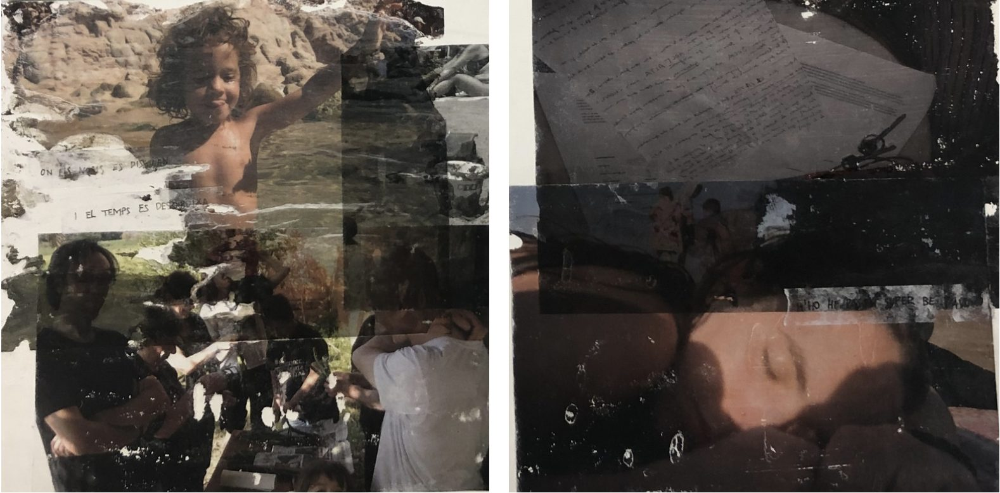
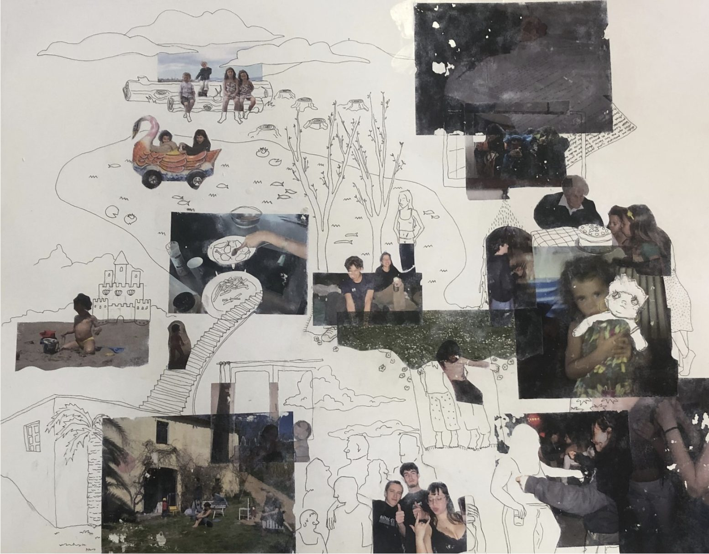
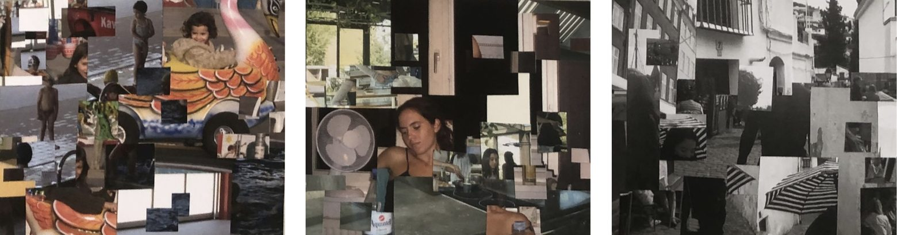
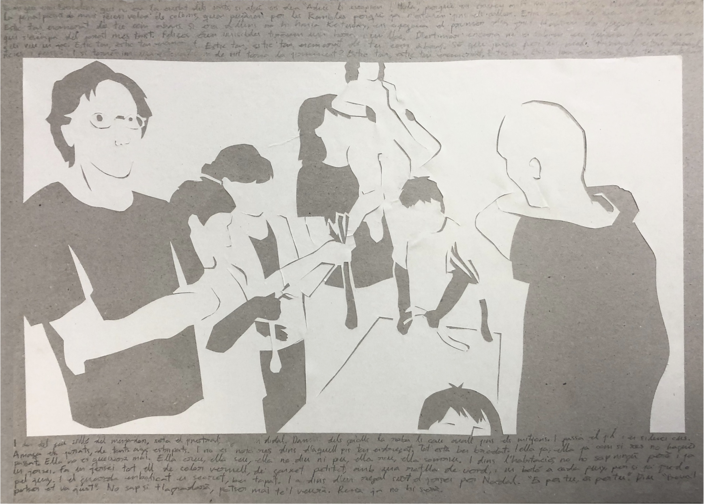
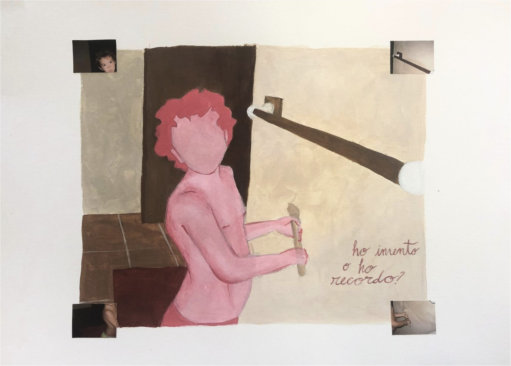

Entre el record
i l’oblit.
El projecte explora la relació entre la memòria, l’oblit i la imaginació, qüestionant fins a quin punt els records són reals o construccions de la nostra ment. Parteixo de la dificultat personal per recordar el passat i de la incertesa de no saber si allò que recordo ho he viscut o ho he imaginat. A través de l’experimentació amb la fotografia i diferents tècniques artístiques, treballo amb els buits, les absències, la fragmentació i la reconstrucció dels records. M’interessa especialment allò que no apareix a les imatges, però que la ment intenta completar, reinterpretar o inventar. El projecte proposa entendre la memòria no com un registre fidel del passat, sinó com un procés subjectiu i canviant, en què el record i la imaginació es confonen fins a desdibuixar els límits entre allò viscut i allò inventat.

Fotografies impreses amb làser i transferides mitjançant la tècnica de transferència fotogràfica sobre cartolina de 250 g/m².
20 × 20 cm

Representació de la meva memòria amb tècnica mixta (retolador de punta fina de 0,5 mm i transferència fotogràfica) sobre paper setinat de 200 g/m².
69 × 80 cm

Sèrie de tres fotografies amb efecte glitch, impreses amb làser, cadascuna representant la fusió de dos records diferents.
28 × 25 cm.

Imitació retallada d’una fotografia de la meva família, realitzada amb paper reciclat sobre cartró reciclat. Amb lletres de les cançons, Com abans dels Mishima, i Ella cus de La Iaia.
42 × 29,7 cm.

Rèplica d’una fotografia de la meva infància realitzada amb pintura acrílica.
42 × 29 cm.